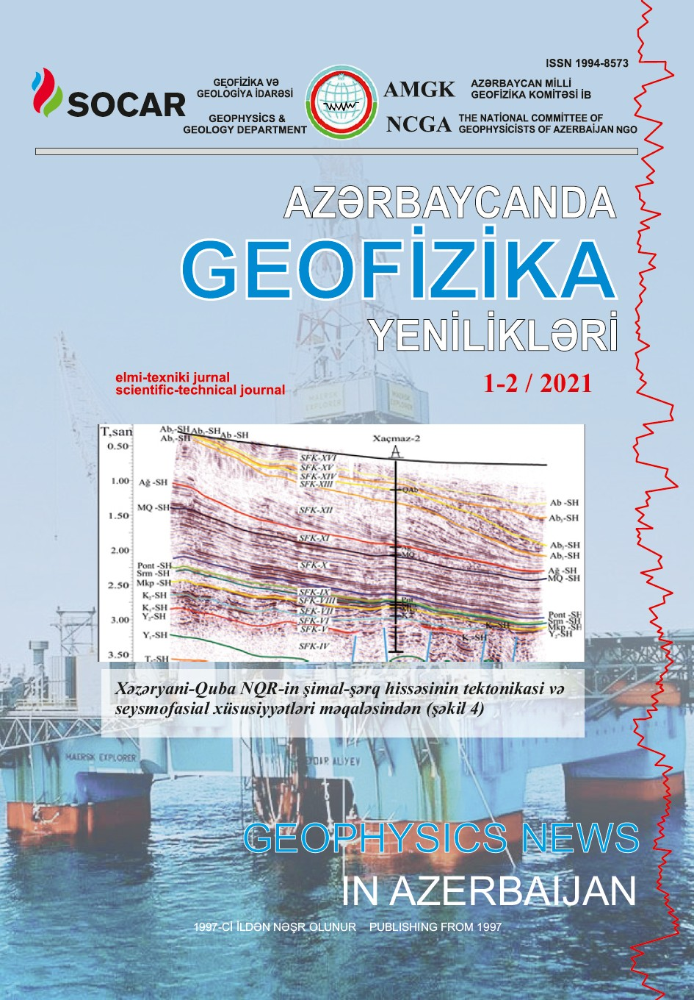

Azərbaycan Milli Geofizika Komitəsi tərəfindən təsis olunan “Azərbaycanda Geofizika Yenilikləri” elmi-texniki və informasiya jurnalı 1997-ci ildən nəşr olunur. Bu illər ərzində jurnalda Respublikamızın və xarici ölkə alim və mütəxəssislərinin geofiziki və geoloji tədqiqatlarının nəticələrinə həsr olunmuş onlarla məqalə və yazı dərc edilmiş, jurnal beynəlxalq nüfuz qazanmışdır. Redaksiya heyətinin yüksək peşəkarlığı, tələbkarlığı, gərgin əməyi və səyi nəticəsində neft geofizikası sahəsində maraqlı bir jurnal ərsəyə gəlmişdir. Mündəricatdan sonra oxuculara jurnalda dərc olunan məqalələrin qısa xülasəsi təqdim olunur. Jurnalda dərc olunan məqalələrin və xülasələrin üç dildə - Azərbaycan, Rus və İngilis dillərində çap olunması onun əhatə dairəsini və oxucu auditoriyasını genişləndirərək dünyanın neft hasil edən ölkələrində tanınmasına imkan yaradır. Jurnalda həmçinin neft sənayesində baş verən maraqlı hadisələr, informasiya xarakterli yazılar, geofizikanın tarixinə aid, məşhur geofizik və geoloqların həyatına həsr olunmuş məqalələr və yubiley təbrikləri də dərc edilir.
“Azərbaycanda geofizika yenilikləri” jurnalında geofizika, geologiya, mühəndisi geologiya və s. sahələr üzrə başqa nəşrlərdə çap olunmayan nəzəri və eksperimental işlərin nəticələri, xülasələr, informasiya və diskussiya xarakterli məqalələr dərc olunur. Məqalələr müəlliflər tərəfindən imzalanmalıdır. Məqaləyə baş redaktorun adına məktub, ekspertiza aktı, müəlliflərin soyadı, adı, atasının adı, iş yeri, ünvanı, telefonu və e-maili əlavə olunmalıdır. Məqalələri elektron poçtla üç dildə (azərbaycan, ingilis və rus dillərində) təqdim etmək olar. Məqalənin mətni MS Word mətn redaktorunda Times New Roman 12 şrifti ilə, 1,5 intervalla, kənarları (soldan – 2,5, yuxarıdan, aşağıdan, sağdan – 2 sm) olmaqla yığılır. Məqalənin optimal həcmi A4 formatında 10-12 çap səhifəsindən (mətn, açar sözlər, cədvəllər, qrafiklər, şəkillər, şəkilaltı yazılar, həmçinin azərbaycan, ingilis və rus dilində xülasələr də daxil olmaqla) artıq olmamalıdır. Şəkillər və cədvəllər ayrıca fayl şəklində *.TİF və ya*.JPEG formatında (çap olunmuş nüsxəsi əlavə edilməklə) keyfiyyəti 300 dpi-dən az olmamaqla qəbul olunur. PDF formatında təqdim olunan materiallar (mətn, cədvəl və qrafiklər) qəbul olunmur. Şəkillərin maksimal ölçüləri – A4, sayı isə 7-dən artıq olmamalıdır. Rastr tipli şəkillərdə bütün kontur və qrafiklər, həmçinin rəqəm və yazılar aydın yazılmalıdır. Riyazi tənliklər aydın və dəqiq şriftlə verilməlidir. Mətndə bütün ədəbiyyata kvadrat mötərizədə (məs., [3]) sıra ardıcıllığı ilə istinad edilir. Ədəbiyyatda müəlliflərin soyadı, inisialları, kitabın və ya məqalənin adı, topludan olduğu halda - toplunun adı, nəşriyyatı, nəşr ili, kitab olduğu halda – səhifələrin sayı, jurnal məqaləsidirsə - jurnalın adı, məqalənin başlangıc və sonuncu səhifələri göstərilir (məsələn, S. 6-12). Məqaləyə, hər biri 1 səhifədən artıq olmamaq şərtilə azərbaycan, ingilis və rus dillərində xülasə əlavə edilir. Əvvəllər nəşr olunmuş məqalələrin eynilə nəşr olunmasına və dərc olunmayan materiallara istinad etməyə icazə verilmir. Göstərilən tələblərə uyğun gəlməyən məqalələr qəbul edilmir. Bütün məqalələr resenziyaya göndərilir.